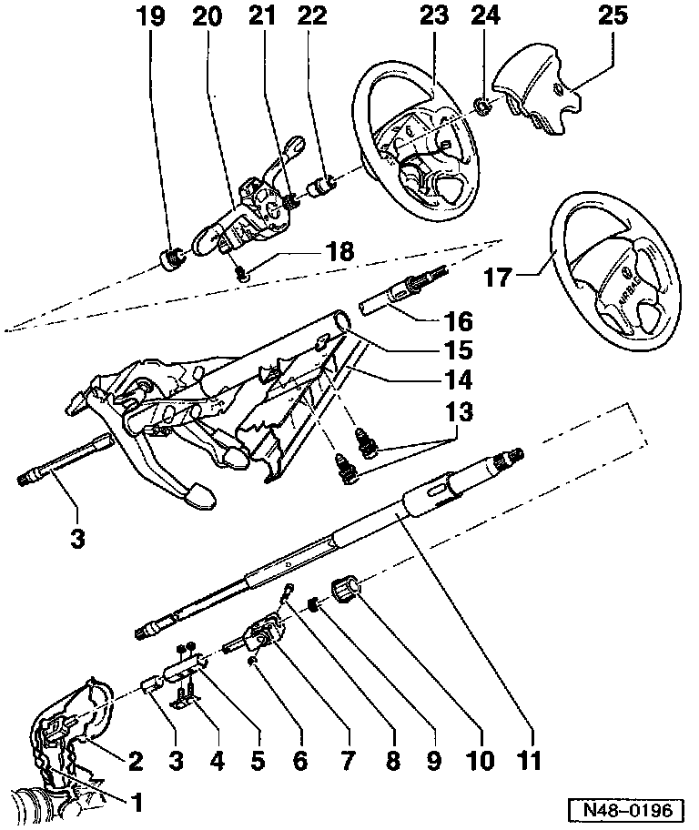
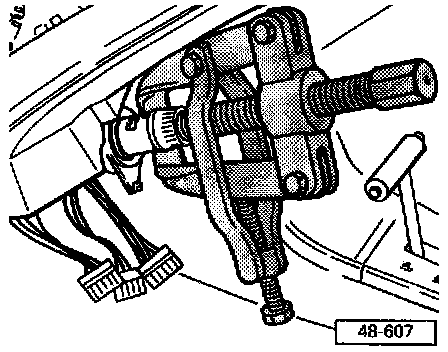
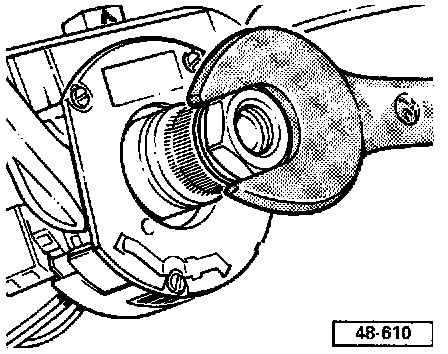
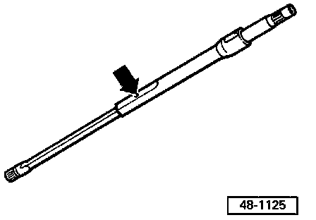
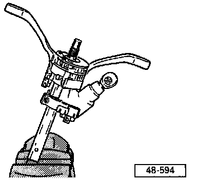

Steering Column Tube & Steering Wheel, Servicing
WARNING:- The airbag igniter is an explosive device. Handled improperly or without adequate safeguards, it can be accidently activated and cause serious personal injury. To guard against personal injury or airbag system failure, only trained Volkswagen Service technicians should test, disassemble or service the airbag system.
- Before starting any work on the steering components of an airbag equipped car, read the safety precautions.
- Do not re-use fasteners that are worn or deformed in normal use.
- Some fasteners are designed to be used only once, and are unreliable and may fail if used a second time. This includes, but is not limited to, nuts, bolts, washers, circlips and coffer pins. Always follow recommendations in this manual-replace these fasteners with new parts where indicated, and any other time it is deemed necessary by inspection.
NOTE:
- All parts marked with an asterisk (*) can be pre-assembled outside of the vehicle, refer to Fig. 5.
- Always replace self-locking nuts and bolts.
- Do not attempt to repair damaged steering components by welding or straightening.
- Directly below the component legend are the Fig. numbers. Please refer to these for information regarding removal and installation instructions.

1- Hex bolt
- Tighten to: 30 Nm (22 ft. lb.)
2- Protective cover
3- Lower universal joint
- Different number of splines from VIN _1HN 002 450
4- Connecting piece
5- Connecting sleeve
6- Hex nut
- Tighten to: 30 Nm (22 ft. lb.)
7- Upper universal joint
8- Hex bolt
9- Spring
10- Lower steering column bearing
- Drive on using slide hammer set VW 771 and large washer
- Drive off downward using a tube
11- Steering column*
- With torque overload clutch, cannot be dismantled
- Standard on Cabrio from m.y. 1997
- Can be retrofitted to all models
- Use corresponding steering column tube and steering column switch when retrofitting
NOTE: If a torque of over 100 Nm (74 ft. lb.) is exerted on steering wheel, then the steering column will also turn without damaging the locking pin. The straight ahead position will not be altered.
12- Lower steering column section*
- Remove by pulling upward out of steering column tube
- Checking length, refer to Fig. 3
- Supplied as replacement part complete with upper section
13- Shear bolt
- Tighten until head shears off
- Drill out to remove
14- Assembly carrier
15- Steering column tube
- Lower bracket must lie fully on foot pedal cluster mount
- Steering column with torque overload clutch has a longer cut-out on underside of tube
16- Steering column*
- Remove by pulling upward out of steering column tube
- Supplied as replacement part complete with upper section
17- Steering wheel for airbag
- Removing and installing, Service and Repair
- Removing and installing airbag spiral spring, refer to Air Bags
18- Shear bolt
- Before tightening, check distance between steering wheel and steering lock housing trim
- Drill out to remove
19- Support ring
20- Steering column switches
- Adjusting distance between steering wheel and steering lock housing, refer to Fig. 4
- For other versions of steering column with torque overload clutch, refer to your parts department
21- Spring
22- Splined adaptor sleeve
- Removing, refer to Fig. 1
- Installing, refer to Fig. 2
23- Steering wheel
- Install in centered position
- For vehicles NOT equipped with airbag
24- Hex nut
- Tighten to: 50 Nm (37 ft. lb.)
25- Cover plate
- For vehicles NOT equipped with airbag

Fig. 1 Removing Splined Adapter Sleeve
- Only use puller with leg clamp (e.g. Kukko 204/2 commercial type).

Fig. 2 Installing Splined Adapter Sleeve
- Place sleeve on steering column and press on using hex nut up to end of thread.
- Remove nut, reinstall with washer, and press sleeve on fully with nut until sleeve is firmly on its seat.

Fig. 3 Checking Length Of Steering Column
- The small sheet metal lug on the lower section must be visible in the hole in the upper section (arrow). If necessary pull both sections firmly apart onto stop.

Fig. 4 Checking Distance Between Steering Wheel And Steering Lock Housing Trim
- Adjust to dimension -a- by moving steering lock housing.
- Dimension -a- = 2.0-5.5 mm (0.078-0.216 in.)
- Tighten shear-head bolt until head shears off.

Fig. 5 Pre-assembling Steering Column
- Carefully clamp lower section of steering column in vice so that upper section is supported on jaws and two halves cannot slide into each other.